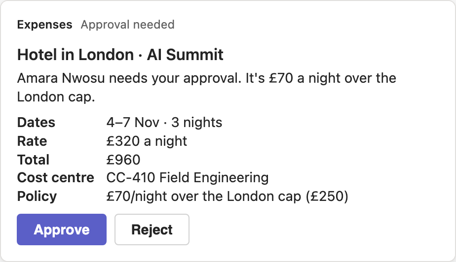

The agent does the work. The screen shows only what just changed, and the proof is one click away.
A finance surface that sits comfortably next to Teams: neutral greys, Fluent blue as the only brand colour, sans-serif tabular numbers, and an agent activity feed whose every step names the tool behind it.
References
Each picked for one pattern we use. Tagged by source: product UI, a marketing page showing product UI, or our own render. We borrow patterns, not branding.





Direction
Cool neutrals, sans-serif everywhere, colour only where it carries status. One serif sentence and one gradient, both reserved for the learned rule.
#F5F6F8#FFFFFF#16171A#0F6CBD#9A5400#17784A#B3261E#0B6A80London hotels are approved up to £350 a night.
From 4 approvals by Jonas Lindqvist at £295 · £280 · £350 · £300
Only what the moment needs
Each component appears when the run produces its data and steps back when it stops being useful. Blue marks what just appeared.
Idle
Past requests and one line: nothing needs you. No presenter hint, no mode labels.
Request arrives
Row slides in and opens. Sticky header with status. The Teams message and what the agent read from it.
Policy check
Tool steps stream in with their names. Details stay hidden while the agent is still reading.
Waiting on Jonas
Agent paused (top bar says so). Teams card preview and the editable Details card appear.
Finance edits
An edit step, a re-check, the old check marked superseded, the card refreshed by the agent.
Decided · learned
Card collapses, fields lock. A learned rule is announced once from the top bar, then cited inline.
What we leave out
The common causes of "ugly" and "AI-generated" in agent demos.